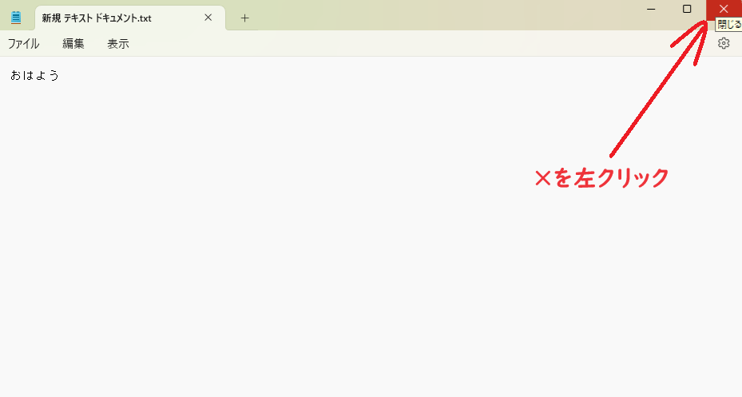

メモ帳を終了しよう 保存したらメモ帳を終了します。メモ帳アプリの右上の×印を押してメモ帳を終了します。パソコンではアプリを終了したい場合は右上の×を押します。終了した後に再度メモファイルを開くと保存した内容が残っている事が分かります。また、□を押すとアプリが最大化されます。もう一度押すと元のサイズに戻ります。横線を押すとアプリが最小化されます。最小化されたアプリは画面の下のアイコンを押すことで再表示できます。 
<< 前へ
次へ >>